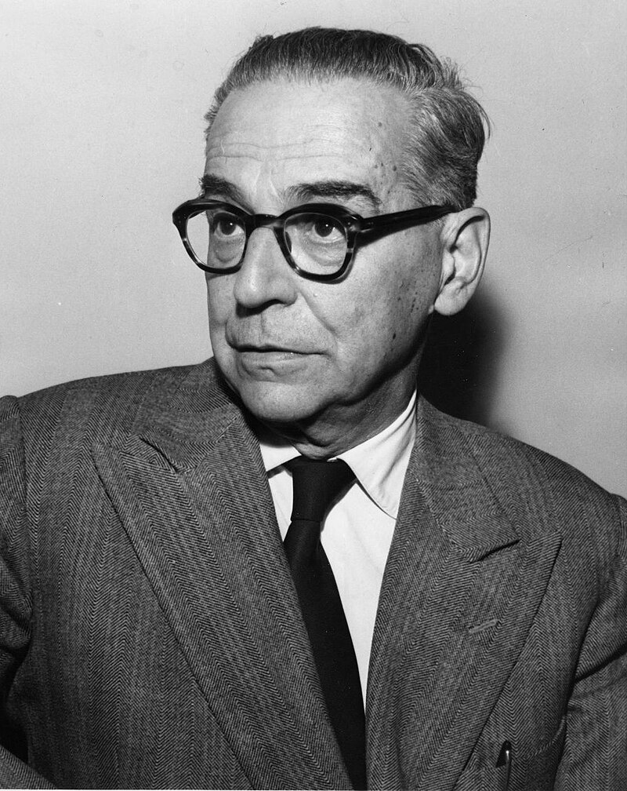
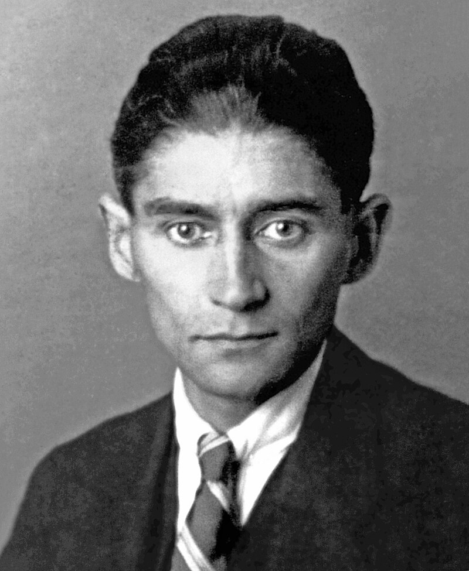
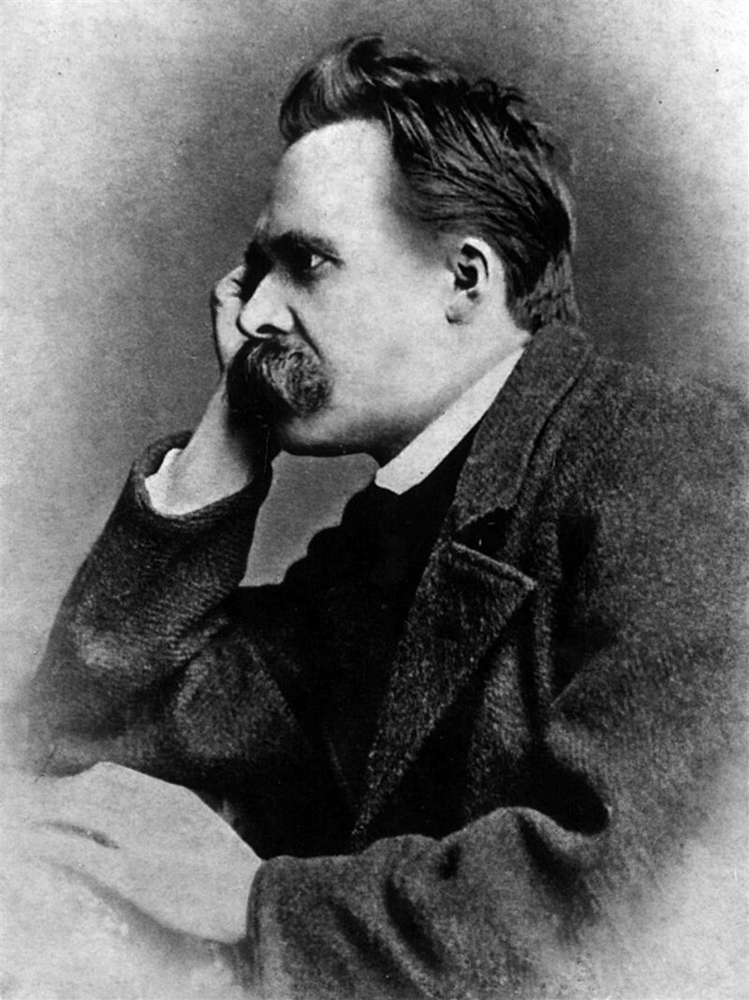

Godine 1961. dobio je Nobelovu nagradu za književnost „za epsku snagu kojom je oblikovao teme i prikazao sudbine ljudi tokom istorije svoje zemlje”. Kao gimnazijalac, Andrić je bio pripadnik naprednog revolucionarnog pokreta protiv Austrougarske vlasti Mlada Bosna i strastveni borac za oslobođenje južnoslovenskih naroda od Austrougarske monarhije. U austrijskom Gracu je diplomirao i doktorirao, a vreme između dva svetska rata proveo je u službi u konzulatima i poslanstvima Kraljevine Jugoslavije u Rimu, Bukureštu, Gracu, Parizu, Madridu, Briselu, Ženevi i Berlinu. Bio je član Srpske akademije nauka i umetnosti u koju je primljen 1926. godine. Njegova najpoznatija dela su pored romana Na Drini ćuprija i Travnička hronika, Prokleta avlija, Gospođica i Jelena, žena koje nema. U svojim delima se uglavnom bavio opisivanjem života u Bosni za vreme osmanske vlasti.
Franc Kafka je nemački pisac jevrejsko-češkoga porekla kojeg kritika danas smatra jednim od najvećih autora XX veka. Kafka je govorio i svoja dela pisao na nemačkom jeziku. Dobro je znao i češki jezik. Stilom pisanja, Kafka je pripadao avangardi, pravcu iz srednje faze modernizma, ali je svojim delovanjem uveliko uticao na brojne stilove kasnog modernizma, uključujući i egzistencijalizam. Njegova najznačajnija dela, pripovetka Preobražaj, te romani Proces i Dvorac prepuni su tematike koja predstavlja arhetipove otuđenosti, psihofizičke brutalnosti, sukoba na relaciji roditelji-deca, likova na zastrašujućim putovanjima i mističnih transformacija.
Fridrih Vilhelm Niče bio je nemački filozof, jedan od najvećih modernih mislilaca i jedan od najoštrijih kritičara zapadne civilizacije, kulture i hrišćanstva; filolog, esejista, filozof, pesnik i kompozitor. Studirao je klasičnu filologiju i kratko vreme radio kao profesor u Bazelu, ali je morao da se povuče zbog bolesti. Na Ničea su najviše uticali Šopenhauer, kompozitor Vagner i predsokratovski filozofi, naročito Heraklit. Ničea neretko označavaju kao jednog od začetnika egzistencijalizma, zajedno sa Serenom Kirkegorom. Mihailo Đurić, autor više knjiga o Ničeu, ga je „nazvao misliocem vulkanske snage”.
